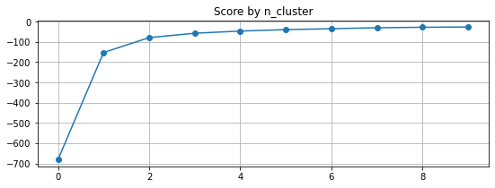
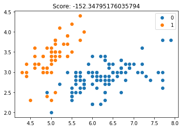
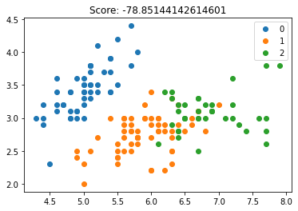
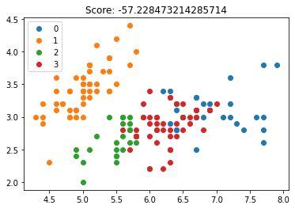

Expectation-Maximization Algorithm - k-Means
10. Expectation-Maximization Algorithm - k-Means¶
from sklearn.datasets import load_iris
from sklearn.cluster import KMeans
import numpy as np
import pandas as pd
import matplotlib.pyplot as plt
data = load_iris()
X = data['data']
y = data['target']
max_n_clusters = 10
scores = []
for i in range(1,max_n_clusters+1):
model = KMeans(n_clusters=i)
model.fit(X)
scores.append(model.score(X))
plt.figure(figsize=(9,3))
plt.title(f"Score by n_cluster")
plt.plot(range(max_n_clusters),scores,"o-")
plt.grid(True)
plt.show()

def plot_clusters_by_n_clusters(n_clusters):
model = KMeans(n_clusters)
model.fit(X)
clusters = model.predict(X)
df = pd.DataFrame(data=X)
df['cluster'] = clusters
df['target'] = y
plt.figure()
plt.title(f"Score: {model.score(X)}")
for i in range(n_clusters):
plt.plot(df[df['cluster']==i].values[:,0],df[df['cluster']==i].values[:,1],'o',label=i)
plt.legend(loc=0)
plt.show()
plot_clusters_by_n_clusters(2)

plot_clusters_by_n_clusters(3)

plot_clusters_by_n_clusters(4)

from scipy.spatial.distance import euclidean
def init_mu(k,X):
return np.array([np.random.normal(loc=X[:,i].mean(),size=(k,)) for i in range(X.shape[1])]).T
def get_nearest_cluster(x):
return np.argmin([euclidean(x,mu[i]) for i in range(k)])
def get_nearest_clusters(X):
return np.apply_along_axis(get_nearest_cluster,1,X)
def transform_array_in_r(k,x):
return np.eye(k)[x]
def compute_r(k,X):
clusters_list = get_nearest_clusters(X)
return transform_array_in_r(k,clusters_list)
def plot_clusters(k,R,X):
plt.figure()
plt.title(f"n_clusters: {k}")
for i in range(k):
plt.plot(mu[i][0],mu[i][1],'X',color="k")
plt.plot(X[np.argwhere(R[:,i]==1).ravel()][:,0],X[np.argwhere(R[:,i]==1).ravel()][:,1],'o',label=i,alpha=0.7)
plt.legend(loc=0)
plt.show()
def update_mu(k,R,X):
for i in range(k):
cluster_size = max(np.argwhere(R[:,i]==1).ravel().shape[0],1)
mu[i] = X[np.argwhere(R[:,i]==1).ravel()].sum(axis=0) / cluster_size
return mu
def compute_distortion(k,mu,R,X):
return np.sum([np.sum((X[np.argwhere(R[:,i]==1).ravel()] - (R[i] @ mu))**2) for i in range(k)])
k = 3
stop_criterion = 1e-12
mu = init_mu(k,X)
R = compute_r(k,X)
distortion = np.infty
for epoch in range(20):
mu = update_mu(k,R,X)
R = compute_r(k,X)
new_distortion = compute_distortion(k,mu,R,X)
if abs(new_distortion - distortion) <= stop_criterion:
print("Convergence achieved")
break
distortion = new_distortion
print(epoch,distortion)
plot_clusters(k,R,X)
0 1725.6376134122293
1 1734.2178000000001
Convergence achieved